Class 2 of the July 2026 monthly series (Ashish Gautam, Adda247) · 28 topics, grouped by exam category.
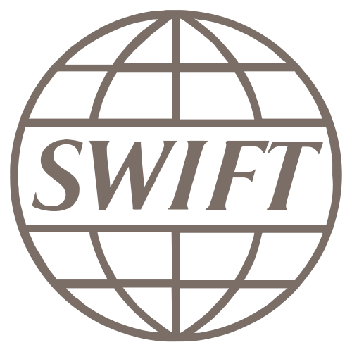
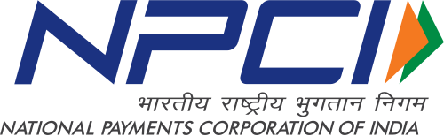
NPCINational Payments Corporation of IndiaEst. 2008HQ MumbaiUmbrella body for retail payments, set up by RBI & IBARuns UPI, RuPay, IMPS's Dilip Asbe joins SWIFTSWIFTSociety for Worldwide Interbank Financial TelecommunicationEst. 1973HQ La Hulpe, BelgiumMessaging network, not a bank's Global Supervisory Board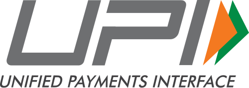
UPIUnified Payments InterfaceLaunched 2016 by NPCI: exchange rate fixed at the time of payment.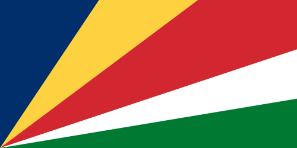
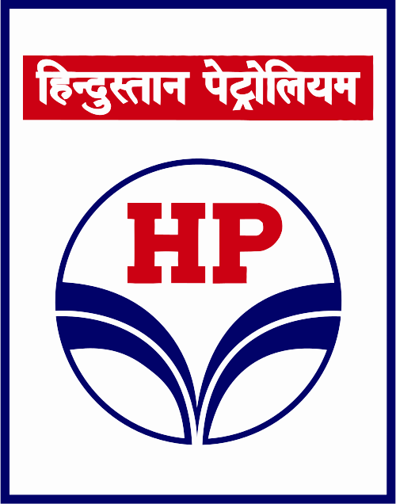
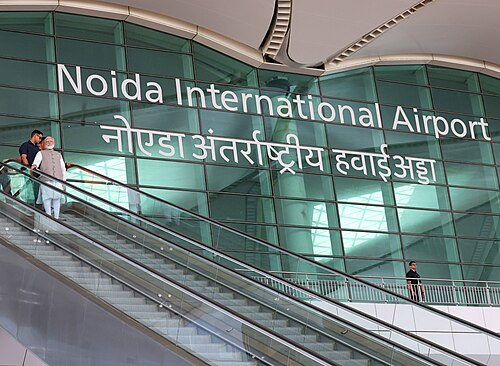
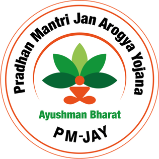
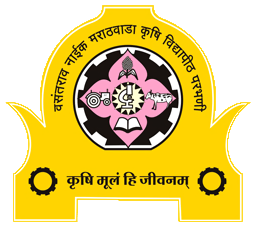
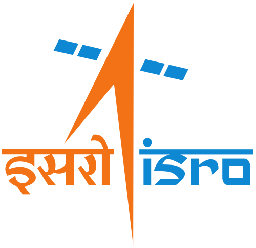
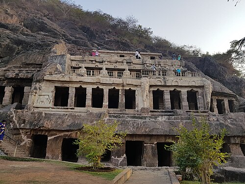
Group by organisation — who heads what, and since when.
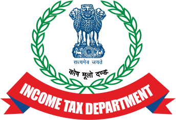
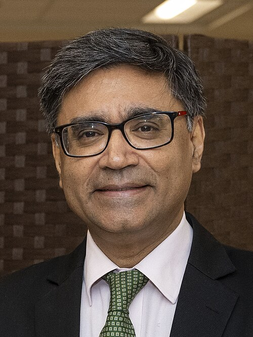
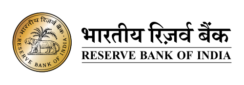
RBIReserve Bank of IndiaEst. 1 April 1935 (RBI Act 1934)Nationalised 1949HQ Mumbai appoints Ravi Shankar as Executive Director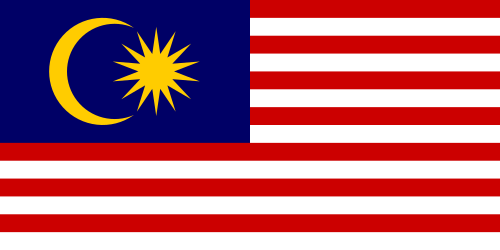
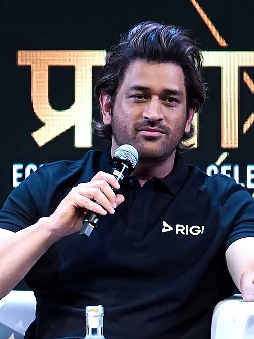
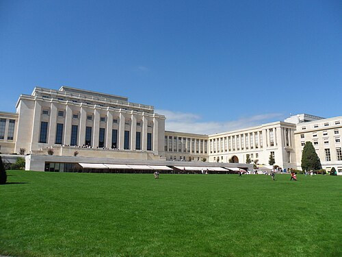
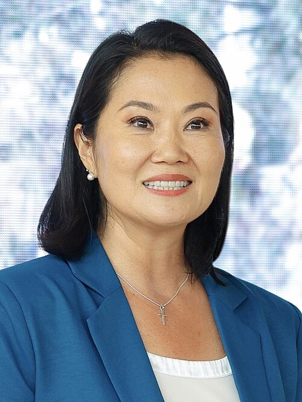
Learn as: cricket · tennis · chess · F1 · athletics · football · badminton.
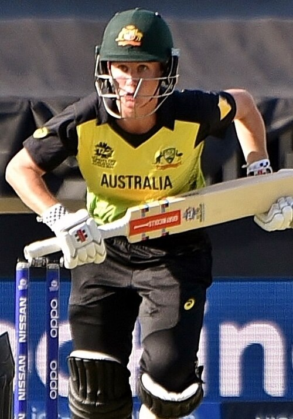
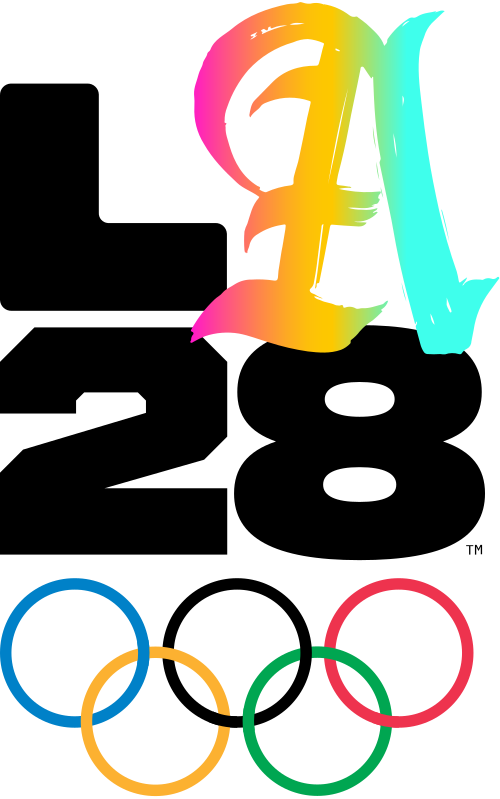
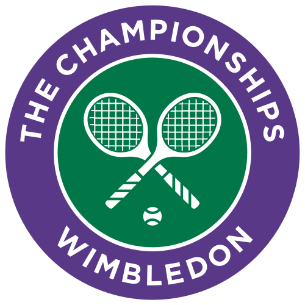
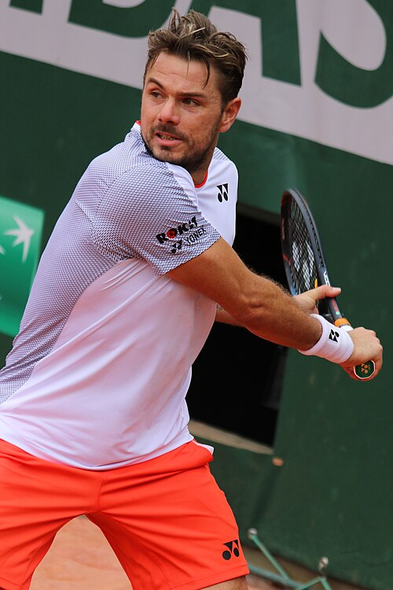
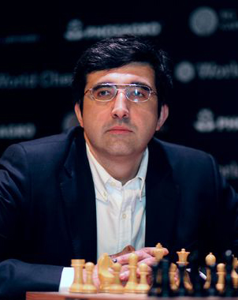
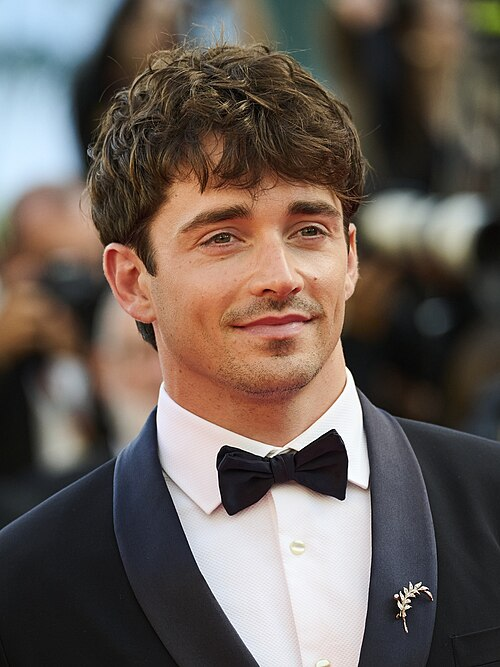
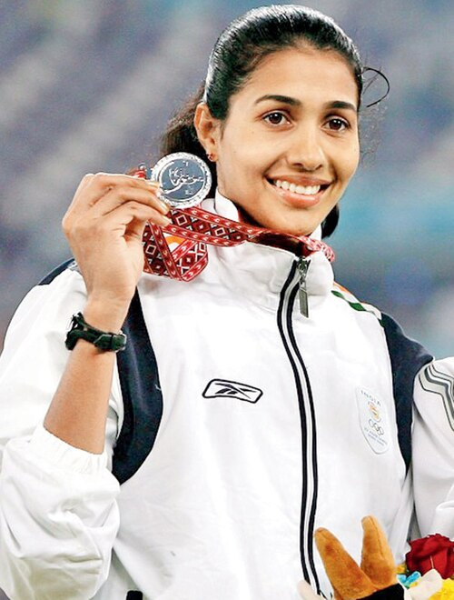
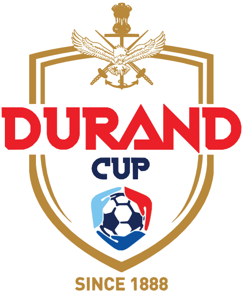
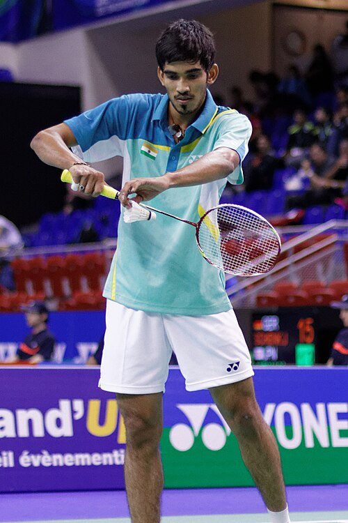
Answer out loud first, then click to check. Re-test the ones you missed tomorrow.
Pachpadra (Balotra, Rajasthan) — HPCL Rajasthan Refinery Ltd; HPCL 74%, Rajasthan 26%
Sanand, Gujarat — Renesas (Japan), Stars Microelectronics (Thailand)
GAGAN, IndiGo A320 at Udaipur
Undavalli Heliport, Andhra Pradesh
8 or 11; La Hulpe, Belgium
Dilip Asbe, MD & CEO, NPCI
Eurobank (with NIPL); UPI now in 10 countries
₹1,250 crore, EXIM Bank
Ravi Agrawal
DSIM — Statistics and Information Management
Anupam Misra (HQ Kolkata, Ministry of Mines)
Australia (beat England at Lord's); Beth Mooney
Harshavardhan G.B.
6.88 m (old: 6.83 m, Anju Bobby George)
Ranchi
End of July 2026 · Class 2